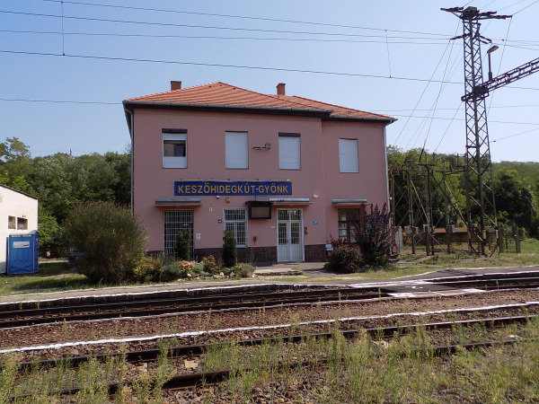

Warum lohnt sich ein Besuch in Keszőhidegkút-Gyönk?
Der kleine ländliche Bahnhof bedient die Orte Keszőhidegkút und Gyönk in den Hügeln des Komitats Tolna. In der Umgebung warten ruhige Landschaften, historische Orte und angenehme Ausflugsziele.
